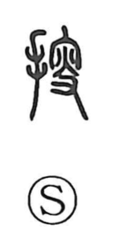

捜

Uncategorized
Kun: sagasu | On: sou
to search ・ to look for ・ to visit
Explanation
Shirakawa analyzes 捜 as a phono‑semantic compound whose original form is 搜: the hand radical is added to 叟 (sou), which serves as the phonetic. He traces 叟 back to an earlier form related to 穸, depicting a hand holding a flame under a roof, the torch used by the clan elder during ancestral rites in the mausoleum. From the image of lifting a light to seek things in the dark, the character came to mean “to search,” and by extension “to visit.” The same phonetic 叟 also underlies 嫂 (sou), “elder brother’s wife,” the woman who served in the mausoleum, reflecting the same ritual background.